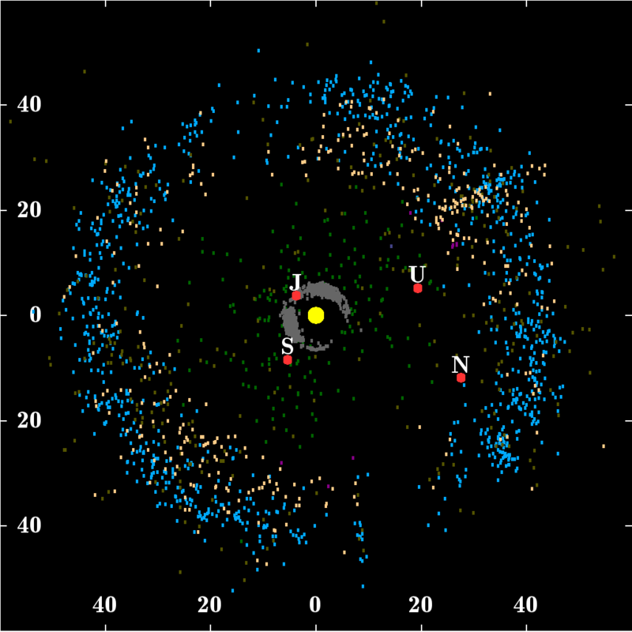
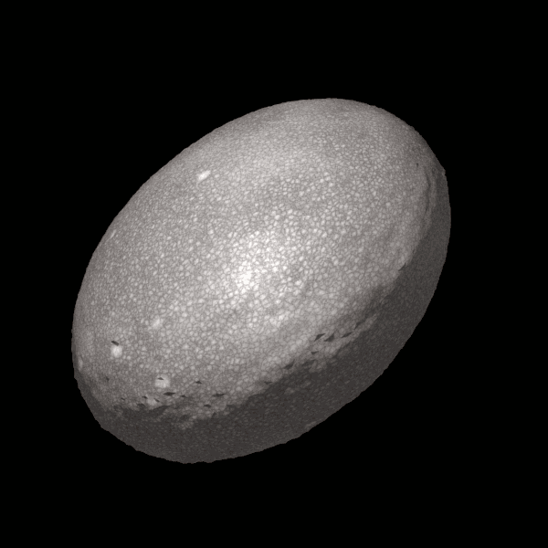

Our Cosmic Objects
Home
Our Cosmic Objects
The Sun
The Planets
 The Moon is Earth's only natural satellite. It is the fifth largest satellite in the Solar
System and the largest and most massive relative to its parent planet,[f] with a diameter about one-quarter that
of Earth (comparable to the width of Australia). The Moon is a planetary-mass object with a differentiated rocky
body, making it a satellite planet underthe geophysical definitions of the term. It lacks any significant
atmosphere, hydrosphere, or magnetic field. Its surface gravity is about one-sixth of Earth's at 0.1654 g, with
Jupiter's moon Io being the only satellite in the Solar System known to have a higher surface gravity and density.
Orbiting Earth at an average distance of 384,400 km (238,900 mi), or about 30 times Earth's diameter, its
gravitational influence very slowly lengthens Earth's day and is the main driver of Earth's tides. The Moon's
orbit around Earth has a sidereal period of 27.3 days. During each synodic period of 29.5 days, the amount of
visible surface illuminated by the Sun varies from none up to 100%, resulting in lunar phases that form the basis
for the months of a lunar calendar. The Moon is tidally locked to Earth, which means that the length of a full
rotation of the Moon on its own axis causes its same side (the near side) to always face Earth, and the somewhat
longer lunar day is the same as the synodic period. However, 59% of the total lunar surface can be seen from
Earth through shifts in perspective due to libration.
The most widely accepted origin explanation posits that the Moon formed 4.51 billion years ago, not long after
Earth, out of the debris from a giant impact between the planet and a hypothesized Mars-sized body called Theia.
It then receded to a wider orbit because of tidal interaction with the Earth. The near side of the Moon is marked
by dark volcanic maria ("seas"), which fill the spaces between bright ancient crustal highlands and prominent
impact craters. Most of the large impact basins and mare surfaces were in place by the end of the Imbrian
period, some three billion years ago. The lunar surface is relatively non-reflective, with a reflectance just
slightly brighter than that of worn asphalt. However, because it has a large angular diameter, the full moon is
the brightest celestial object in the night sky. The Moon's apparent size is nearly the same as that of the Sun,
allowing it to cover the Sun almost completely during a total solar eclipse.
Both the Moon's prominence in Earth's sky and its regular cycle of phases have provided cultural references and
influences for human societies throughout history. Such influences can be found in language, calendar systems,
art, and mythology. The first artificial object to reach the Moon was the Soviet Union's Luna 2 uncrewed
spacecraft in 1959; this was followed by the first successful soft landing by Luna 9 in 1966. The only human
lunar missions to date have been those of the United States' Apollo program, which landed twelve men on the
surface between 1969 and 1972. These and later uncrewed missions returned lunar rocks that have been used to
develop a detailed geological understanding of the Moon's origins, internal structure, and subsequent history.
The Moon is Earth's only natural satellite. It is the fifth largest satellite in the Solar
System and the largest and most massive relative to its parent planet,[f] with a diameter about one-quarter that
of Earth (comparable to the width of Australia). The Moon is a planetary-mass object with a differentiated rocky
body, making it a satellite planet underthe geophysical definitions of the term. It lacks any significant
atmosphere, hydrosphere, or magnetic field. Its surface gravity is about one-sixth of Earth's at 0.1654 g, with
Jupiter's moon Io being the only satellite in the Solar System known to have a higher surface gravity and density.
Orbiting Earth at an average distance of 384,400 km (238,900 mi), or about 30 times Earth's diameter, its
gravitational influence very slowly lengthens Earth's day and is the main driver of Earth's tides. The Moon's
orbit around Earth has a sidereal period of 27.3 days. During each synodic period of 29.5 days, the amount of
visible surface illuminated by the Sun varies from none up to 100%, resulting in lunar phases that form the basis
for the months of a lunar calendar. The Moon is tidally locked to Earth, which means that the length of a full
rotation of the Moon on its own axis causes its same side (the near side) to always face Earth, and the somewhat
longer lunar day is the same as the synodic period. However, 59% of the total lunar surface can be seen from
Earth through shifts in perspective due to libration.
The most widely accepted origin explanation posits that the Moon formed 4.51 billion years ago, not long after
Earth, out of the debris from a giant impact between the planet and a hypothesized Mars-sized body called Theia.
It then receded to a wider orbit because of tidal interaction with the Earth. The near side of the Moon is marked
by dark volcanic maria ("seas"), which fill the spaces between bright ancient crustal highlands and prominent
impact craters. Most of the large impact basins and mare surfaces were in place by the end of the Imbrian
period, some three billion years ago. The lunar surface is relatively non-reflective, with a reflectance just
slightly brighter than that of worn asphalt. However, because it has a large angular diameter, the full moon is
the brightest celestial object in the night sky. The Moon's apparent size is nearly the same as that of the Sun,
allowing it to cover the Sun almost completely during a total solar eclipse.
Both the Moon's prominence in Earth's sky and its regular cycle of phases have provided cultural references and
influences for human societies throughout history. Such influences can be found in language, calendar systems,
art, and mythology. The first artificial object to reach the Moon was the Soviet Union's Luna 2 uncrewed
spacecraft in 1959; this was followed by the first successful soft landing by Luna 9 in 1966. The only human
lunar missions to date have been those of the United States' Apollo program, which landed twelve men on the
surface between 1969 and 1972. These and later uncrewed missions returned lunar rocks that have been used to
develop a detailed geological understanding of the Moon's origins, internal structure, and subsequent history.
The asteroid belt is a torus-shaped region in the Solar System, located roughly
between the orbits of the planets Jupiter and Mars. It contains a great many solid,irregularly shaped bodies,
of many sizes, but much smaller than planets, called asteroids or minor planets. This asteroid belt is also
called the main asteroid belt or main belt to distinguish it from other asteroid populations in the Solar
System such as near-Earth asteroids and trojan asteroids.
The asteroid belt is the smallest and innermost known circumstellar disc in the Solar System. About 60% its
mass is contained in the four largest asteroids: Ceres, Vesta, Pallas, and Hygiea. The total mass of the
asteroid belt is calculated to be 3% that of the Moon.
Ceres, the only object in the asteroid belt large enough to be a dwarf planet, is about 950 km in diameter,
whereas Vesta, Pallas, and Hygiea have mean diameters less than 600 km. The remaining bodies range down to the
size of a dust particle. The asteroid material is so thinly distributed that numerous unmanned spacecraft have
traversed it without incident. Nonetheless, collisions between large asteroids occur and can produce an asteroid
family, whose members have similar orbital characteristics and compositions. Individual asteroids within the
asteroid belt are categorized by their spectra, with most falling into three basic groups: carbonaceous
(C-type), silicate (S-type), and metal-rich (M-type).
The asteroid belt formed from the primordial solar nebula as a group of planetesimals. Planetesimals are the
smaller precursors of the protoplanets. Between Mars and Jupiter, however, gravitational perturbations from
Jupiter imbued the protoplanets with too much orbital energy for them to accrete into a planet. Collisions
became too violent, and instead of fusing together, the planetesimals and most of the protoplanets shattered.
As a result, 99.9% of the asteroid belt's original mass was lost in the first 100 million years of the Solar
System's history. Some fragments eventually found their way into the inner Solar System, leading to
meteorite impacts with the inner planets. Asteroid orbits continue to be appreciably perturbed whenever their
period of revolution about the Sun forms an orbital resonance with Jupiter. At these orbital distances, a
Kirkwood gap occurs as they are swept into other orbits.
Classes of small Solar System bodies in other regions are the near-Earth objects, the centaurs, the Kuiper belt
objects, the scattered disc objects, the sednoids, and the Oort cloud objects.
On 22 January 2014, European Space Agency (ESA) scientists reported the detection, for the first definitive
time, of water vapor on Ceres, the largest object in the asteroid belt. The detection was made by using the
far-infrared abilities of the Herschel Space Observatory. The finding was unexpected because comets, not
asteroids, are typically considered to "sprout jets and plumes". According to one of the scientists, "The lines
are becoming more and more blurred between comets and asteroids".

The Kuiper belt ('kaiper') is a circumstellar disc in the outer Solar System,
extending from the orbit of Neptune at 30 astronomical units (AU) to approximately 50 AU from the Sun. It is
similar to the asteroid belt, but is far larger—20 times as wide and 20 - 200 times as massive. Like the asteroid
belt, it consists mainly of small bodies or remnants from when the Solar System formed. While many asteroids are
composed primarily of rock and metal, most Kuiper belt objects are composed largely of frozen volatiles
(termed "ices"), such as methane, ammonia, and water. The Kuiper belt is home to most of the objects that
astronomers generally accept as dwarf planets: Orcus, Pluto, Haumea, Quaoar, and Makemake.Some of the Solar
System's moons, such as Neptune's Triton and Saturn's Phoebe, may have originated in the region.
The Kuiper belt was named after Dutch astronomer Gerard Kuiper, although he did not predict its existence.
In 1992, minor planet (15760) Albion was discovered, the first Kuiper belt object (KBO) since Pluto (in 1930)
and Charon (in 1978). Since its discovery, the number of known KBOs has increased to thousands, and more than
100,000 KBOs over 100 km (62 mi) in diameter are thought to exist. The Kuiper belt was initially thought to
be the main repository for periodic comets, those with orbits lasting less than 200 years. Studies since the
mid-1990s have shown that the belt is dynamically stable and that comets' true place of origin is the scattered
disc, a dynamically active zone created by the outward motion of Neptune 4.5 billion years ago; scattered
disc objects such as Eris have extremely eccentric orbits that take them as far as 100 AU from the Sun.
The Kuiper belt is distinct from the hypothesized Oort cloud, which is believed to be a thousand times more
distant and mostly spherical. The objects within the Kuiper belt, together with the members of the scattered
disc and any potential Hills cloud or Oort cloud objects, are collectively referred to as trans-Neptunian
objects (TNOs).[15] Pluto is the largest and most massive member of the Kuiper belt and the largest and the
second-most-massive known TNO, surpassed only by Eris in the scattered disc.[a] Originally considered a planet,
Pluto's status as part of the Kuiper belt caused it to be reclassified as a dwarf planet in 2006. It is
compositionally similar to many other objects of the Kuiper belt, and its orbital period is characteristic
of a class of KBOs, known as "plutinos," that share the same 2:3 resonance with Neptune.
The Kuiper belt and Neptune may be treated as a marker of the extent of the Solar System, alternatives being the
heliopause and the distance at which the Sun's gravitational influence is matched by that of other stars
(estimated to be between 50000 AU and 125000 AU).
Pluto
 Pluto (minor-planet designation: 134340 Pluto) is a dwarf planet in the Kuiper belt,
a ring of bodies beyond the orbit of Neptune. It is the ninth-largest and tenth-most-massive known object to
directly orbit the Sun. It is the largest known trans-Neptunian object by volume, by a small margin, but is
slightly less massive than Eris. Like other Kuiper belt objects, Pluto is made primarily of ice and rock and is
much smaller than the inner planets. Compared to Earth's moon, Pluto has only one sixth its mass and one third
its volume.
Pluto has a moderately eccentric and inclined orbit, ranging from 30 to 49 astronomical units (4.5 to 7.3
billion kilometers; 2.8 to 4.6 billion miles) from the Sun. Light from the Sun takes 5.5 hours to reach Pluto
at its average distance (39.5 AU [5.91 billion km; 3.67 billion mi]). Pluto's eccentric orbit periodically
brings it closer to the Sun than Neptune, but a stable orbital resonance prevents them from colliding.
Pluto has five known moons: Charon, the largest, whose diameter is just over half that of Pluto; Styx; Nix;
Kerberos; and Hydra. Pluto and Charon are sometimes considered a binary system because the barycenter of their
orbits does not lie within either body, and they are tidally locked. The New Horizons mission was the first
spacecraft to visit Pluto and its moons, making a flyby on July 14, 2015 and taking detailed measurements and
observations.
Pluto was discovered in 1930, the first object in the Kuiper belt. It was immediately hailed as the ninth
planet, but its planetary status was questioned when it was found to be much smaller than expected. These doubts
increased following the discovery of additional objects in the Kuiper belt starting in the 1990s, and
particularly the more massive scattered disk object Eris in 2005. In 2006 the International Astronomical Union
(IAU) formally redefined the term planet to exclude dwarf planets such as Pluto. Many planetary astronomers,
however, continue to consider Pluto and other dwarf planets to be planets.
Pluto (minor-planet designation: 134340 Pluto) is a dwarf planet in the Kuiper belt,
a ring of bodies beyond the orbit of Neptune. It is the ninth-largest and tenth-most-massive known object to
directly orbit the Sun. It is the largest known trans-Neptunian object by volume, by a small margin, but is
slightly less massive than Eris. Like other Kuiper belt objects, Pluto is made primarily of ice and rock and is
much smaller than the inner planets. Compared to Earth's moon, Pluto has only one sixth its mass and one third
its volume.
Pluto has a moderately eccentric and inclined orbit, ranging from 30 to 49 astronomical units (4.5 to 7.3
billion kilometers; 2.8 to 4.6 billion miles) from the Sun. Light from the Sun takes 5.5 hours to reach Pluto
at its average distance (39.5 AU [5.91 billion km; 3.67 billion mi]). Pluto's eccentric orbit periodically
brings it closer to the Sun than Neptune, but a stable orbital resonance prevents them from colliding.
Pluto has five known moons: Charon, the largest, whose diameter is just over half that of Pluto; Styx; Nix;
Kerberos; and Hydra. Pluto and Charon are sometimes considered a binary system because the barycenter of their
orbits does not lie within either body, and they are tidally locked. The New Horizons mission was the first
spacecraft to visit Pluto and its moons, making a flyby on July 14, 2015 and taking detailed measurements and
observations.
Pluto was discovered in 1930, the first object in the Kuiper belt. It was immediately hailed as the ninth
planet, but its planetary status was questioned when it was found to be much smaller than expected. These doubts
increased following the discovery of additional objects in the Kuiper belt starting in the 1990s, and
particularly the more massive scattered disk object Eris in 2005. In 2006 the International Astronomical Union
(IAU) formally redefined the term planet to exclude dwarf planets such as Pluto. Many planetary astronomers,
however, continue to consider Pluto and other dwarf planets to be planets.

Haumea (minor-planet designation 136108 Haumea) is a dwarf planet located
beyond Neptune's orbit. It was discovered in 2004 by a team headed by Mike Brown of Caltech at the Palomar
Observatory in the United States and disputably also in 2005 by a team headed by José Luis Ortiz Moreno at the
Sierra Nevada Observatory in Spain, though the latter claim has been contested. On September 17, 2008, it was
named after Haumea, the Hawaiian goddess of childbirth, under the expectation by the International Astronomical
Union (IAU) that it would prove to be a dwarf planet. Nominal estimates make it the third-largest known
trans-Neptunian object, after Eris and Pluto, though the uncertainty in best-fit modeling slightly overlaps
with the larger size estimates for Makemake
Haumea's mass is about one-third that of Pluto, and 1/1400 that of Earth. Although its shape has not been
directly observed, calculations from its light curve are consistent with it being a Jacobi ellipsoid (the shape
it would be if it were a dwarf planet), with its major axis twice as long as its minor. In October 2017,
astronomers announced the discovery of a ring system around Haumea, representing the first ring system
discovered for a trans-Neptunian object. Haumea's gravity was until recently thought to be sufficient for it
to have relaxed into hydrostatic equilibrium, though that is now unclear. Haumea's elongated shape together
with its rapid rotation, rings, and high albedo (from a surface of crystalline water ice), are thought to be the
consequences of a giant collision, which left Haumea the largest member of a collisional family that includes
several large trans-Neptunian objects and Haumea's two known moons, Hi'iaka and Namaka.
Back to Top